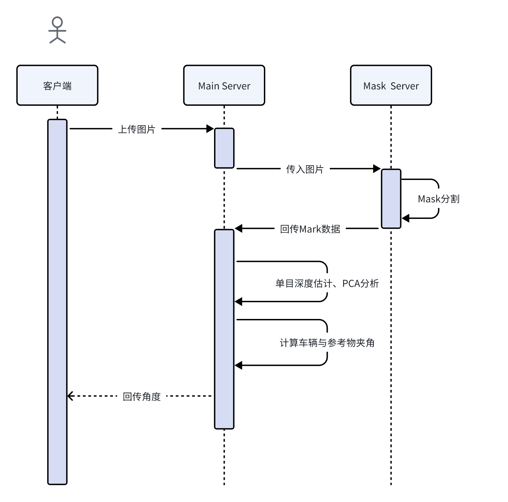

Flask服务端设计
一、概述
本项目采用Flask框架进行docker之间的通信与接口调用，主要实现了图像上传、图像处理、状态查询等功能。整个服务由多个接口组成，支持图像上传、处理结果查询以及图像处理状态的管理。以下是整体交互流程图： 
二、Mask Server
（一）基本信息
- 基础URL: http://服务器IP:5000
- 内容类型: application/json 或 multipart/form-data
（二）接口列表
1. 健康检查接口
- 请求方式:
GET - 路径:
/health - 描述: 用于检查服务是否正常运行
-
响应示例:
json { "status": "ok" }
2. 图像掩膜预测接口
- 请求方式:
POST - 路径:
/predict - 描述: 接收图片，使用
Mask R-CNN模型进行实例分割，返回分割掩膜信息
（1）请求格式
支持两种提交方式：
-
表单提交 (multipart/form-data):
-
参数名: file
- 参数类型: 图片文件
- 请求体格式:
{
"file": "二进制编码的图片数据"
}
- 示例代码 (Python):
import requests
url = "http://服务器IP:5000/predict"
files = {"file": open("path/to/image.jpg", "rb")}
response = requests.post(url, files=files)
print(response.json())
-
JSON提交 (application/json):
-
参数名: image
- 参数类型: Base64编码的图片数据
- 请求体格式:
{
"image": "Base64编码的图片数据"
}
- 示例代码 (Python):
import requests
import base64
url = "http://服务器IP:5000/predict"
with open("path/to/image.jpg", "rb") as image_file:
encoded_string = base64.b64encode(image_file.read()).decode('utf-8')
payload = {"image": encoded_string}
headers = {"Content-Type": "application/json"}
response = requests.post(url, json=payload, headers=headers)
print(response.json())
（2）响应格式
- 成功响应
{
"status": "success",
"count": 2, // 检测到的对象数量
"masks": [
{
"mask_id": 0,
"mask_rle": {
"counts": "Base64编码的RLE压缩掩膜数据",
"size": [高度, 宽度] // 掩膜尺寸
}
},
{
"mask_id": 1,
"mask_rle": {
"counts": "Base64编码的RLE压缩掩膜数据",
"size": [高度, 宽度] // 掩膜尺寸
}
}
]
}
- 响应失败
{
"error": "错误描述信息"
}
三、Main Server
（一）基本信息
- 基础URL: http://服务器IP:11470
- 内容类型: application/json
- 文件上传目录:
uploads - 数据库: SQLite（存储图像处理记录）
（二）接口列表
1. 上传图像接口
- 请求方式: POST
- 路径:
/upload - 描述: 用于上传图像，并启动后台异步处理任务
- 请求格式: JSON
{"image": "Base64编码的图像数据"}
- 响应示例:
json
{
"message": "success upload image",
"filename": "image.jpg"
}
-
说明:
-
将Base64编码的图像数据传递到image字段中
-
后端将异步处理图像并保存到本地uploads目录
-
初始处理状态为processing，处理结果会更新为completed或error，并存储在SQLite数据库中。
2. 查询处理状态接口
-
请求方式: GET
-
路径: /status/
-
描述: 查询指定图像的处理状态
-
请求格式: URL参数
<filename>: 图像文件名（例如 image.jpg） - 响应示例:
{
"status": "completed",
"filename": "image_20230515_123456.jpg",
"degree": 0.95
}
status: 图像处理状态，processing（处理中）、completed（已完成）、error（出错）
degree: 处理完成后的度数（当status为completed时返回）
- 错误响应示例:
{
"error": "找不到该文件的处理记录"
}
（三）处理步骤设计
初始化数据库
服务启动时，会初始化一个SQLite数据库（image_process.db），并在其中创建一个image_results表，用于存储图像的处理状态和度数信息。表结构如下：
CREATE TABLE IF NOT EXISTS image_results
(
filename TEXT PRIMARY KEY,
status TEXT,
degree REAL,
created_at TIMESTAMP DEFAULT CURRENT_TIMESTAMP
)
上传图像
用户通过/upload接口上传图像时，图像数据会被解码并保存为JPEG文件。然后，上传信息（包括图像文件名和处理状态）将被存入数据库。处理图像的任务会在后台异步执行。
异步处理图像
上传图像后，后台会异步执行以下任务：
-
通过prase_image函数处理图像并保存到输出目录
-
使用prase_pca函数分析处理后的图像，返回一个度数值
-
更新数据库中的状态为completed，并存储分析的degree值。如果发生错误，则更新状态为error。